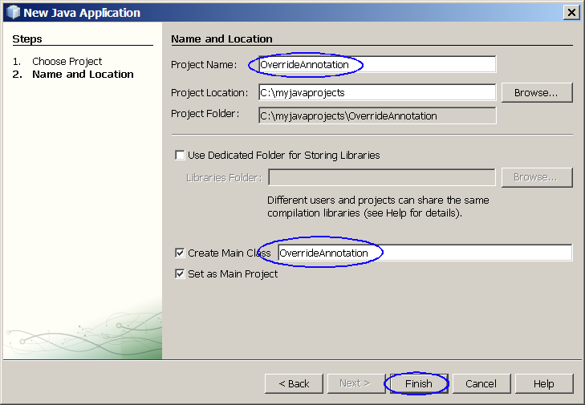
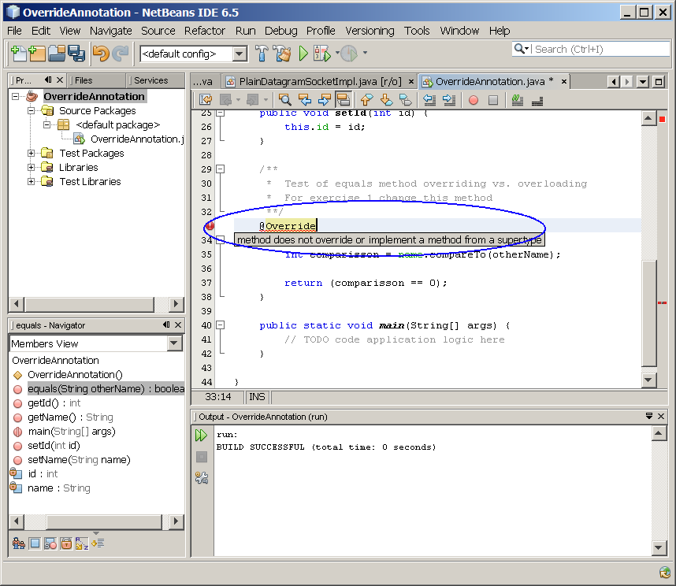
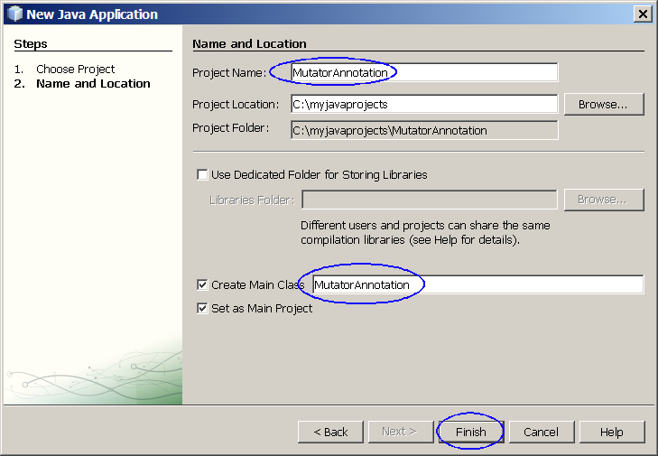
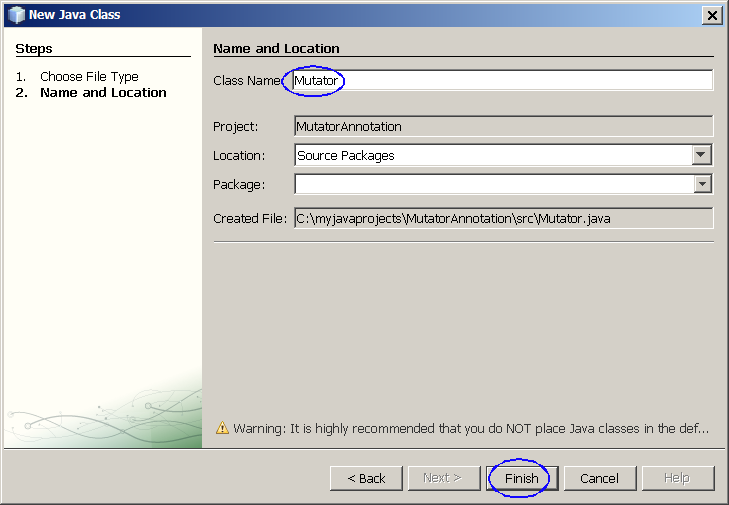
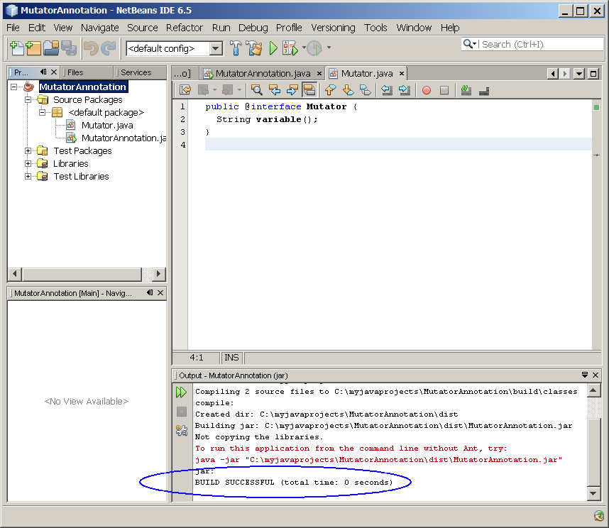
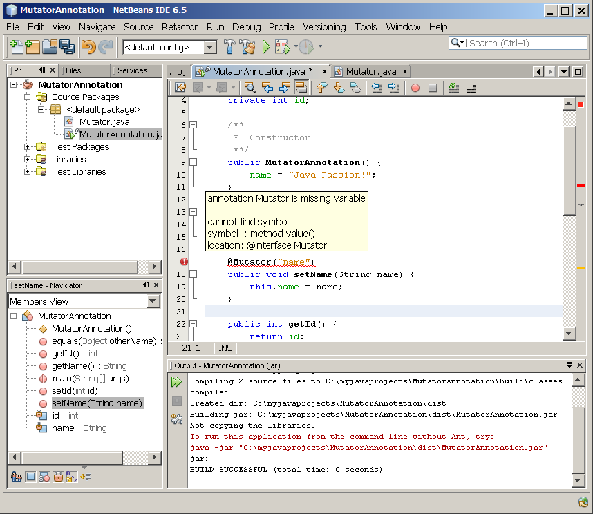
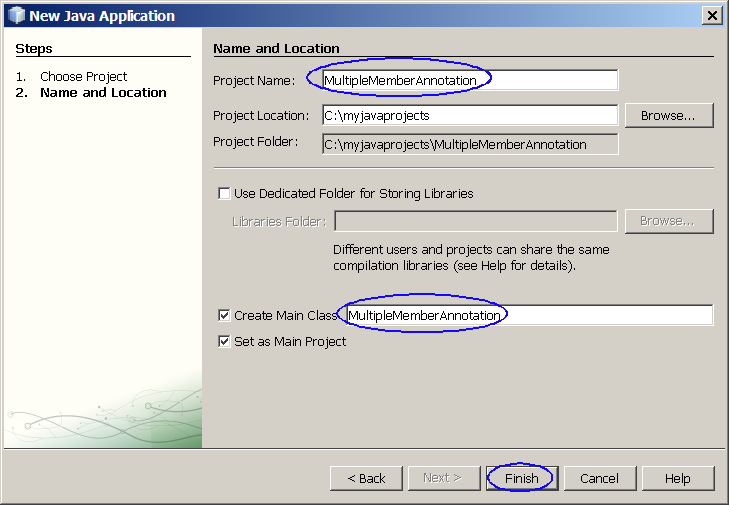
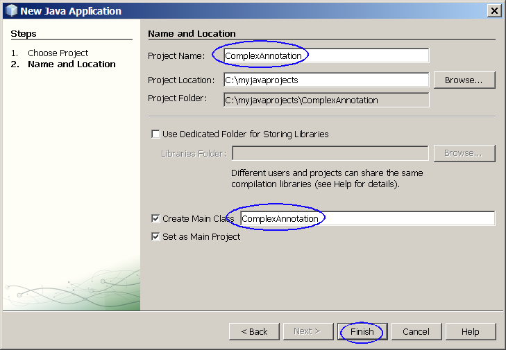
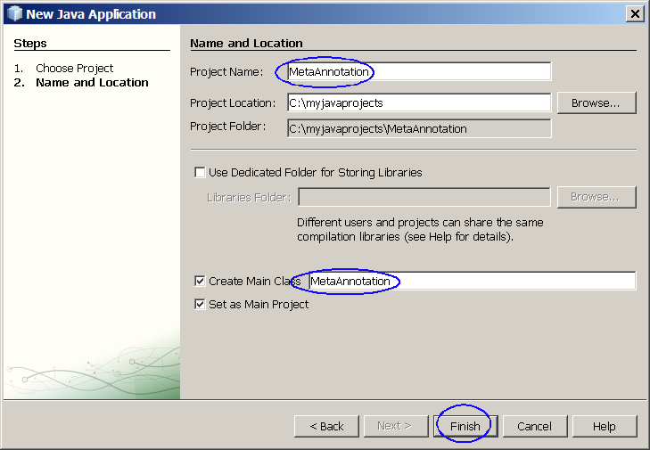

Java Annotation
Today
Java™
technology is everywhere—in large enterprise systems, desktops,
hand-held
devices, and smart cards. Consequently, Java technology is the platform
of
choice for developers all over the world. All this has happened in the
short
time since the technology was first introduced in 1995. While there
have
been updates and enhancements since the first version, release 5.0 of
the
core Java platform brings to the table more language-level updates and
other enhancements than at any other time, through the incorporation of
a number
of Java Specification Requests (JSRs). In this hands-on session, you
will
learn about all these changes and how to build desktop applications
using
version 5.0 of the Java platform. This hands-on lab takes
you through the basics of using Java annotation.
Expected duration: 150 minutes
Software Needed
Before you begin, you need to install required software (JDK and
NetBeans IDE) on your
computer as
described
here. Also download and unzip the hands-on lab file mentioned
below.
- 1107_javase5annotation.zip (download)
- It contains this document and the lab contents
- Download it and unzip in a directory of your choice
Change Log
- March. 12th, 2007: Created
- June 10th, 2007: Homework is added
- Jan. 10th, 2009: NetBeans 6.5 is used
Lab Exercises
Exercise 1: Override annotation
Programmers sometimes overload a method when they mean to override it;
a classic example of this is the equals() method which is defined in
the Object class. AnnotatedClass.java contains a simple example
of this:
public boolean equals(String
otherName) {
int comparisson = name.compareTo(otherName);
return (comparisson == 0);
}
|
The programmer thinks that they are overriding the
equals() method from the Object class, but since that takes an Object
as a parameter the result (which is perfectly correct Java) is an
overloaded method instead. This could, potentially cause some
very subtle and therefore hard to debug runtime errors. Adding a
standard annotation type to this can identify these problems at compile
time.
(1.1)
Override annotation
0. Start NetBeans IDE if you have not done so yet.
1. Create a new NetBeans project
- Select File->New Project (Ctrl+Shift+N). The New Project dialog box appears.
- Under Choose Project
pane,
select Java under Categories and Java Application under Projects.
- Click Next.
- Under Name and Location
pane, for the Project Name
field, type in OverrideAnnotation as
project name.
- For Create Main Class
field, type in OverrideAnnotation.
- Click Finish.

- Observe that OverrideAnnotation
project
appears and IDE generated OverrideAnnotation.java
is displayed in the source editor window of NetBeans IDE.
2. Modify the IDE generated
OverrideAnnotation.java
as shown in Code-1.11 below. Study the code by paying
special attention to the bold fonted parts.
public class OverrideAnnotation {
private String name;
private int id;
/**
* Constructor
**/
public OverrideAnnotation() {
name = "Java Passion!";
}
public String getName() {
return name;
}
public void setName(String name) {
this.name = name;
}
public int getId() {
return id;
}
public void setId(int id) {
this.id = id;
}
/**
*
Test of equals method overriding vs. overloading
*
For exercise 1 change this method
**/
public
boolean equals(String otherName) {
int comparisson = name.compareTo(otherName);
return (comparisson == 0);
}
public static void main(String[] args) {
// TODO code application
logic here
}
}
|
Code-1.11:
equals() method
without @Override annotation
3. Build and run the project
- Right click ExtendThreadClassTest0
project
and select Run.
- Observe the compilation of the code succeeds.
(Figure-1.13 below) This is not
desirable. What
we want is compile time detection of a problem.
run:
BUILD SUCCESSFUL (total time: 1 second)
|
Figure-1.13: Result of running ExtendThreadClassTest0 application
5. Modify the
ExtendThreadClassTest0.java
as shown in Code-1.15 below. The code fragments that need to be
added are highlighted in
bold
and blue-colored font.
public class OverrideAnnotation {
private String name;
private int id;
/**
* Constructor
**/
public OverrideAnnotation() {
name = "Java Passion!";
}
public String getName() {
return name;
}
public void setName(String name) {
this.name = name;
}
public int getId() {
return id;
}
public void setId(int id) {
this.id = id;
}
/**
* Test of equals method overriding vs.
overloading
* For exercise 1 change this method
**/
@Override
public boolean equals(String otherName) {
int comparisson =
name.compareTo(otherName);
return (comparisson == 0);
}
public static void main(String[] args) {
// TODO code application
logic here
}
}
|
Code-1.15: equals() method with @Override annotation
6. Observe that the compiler now detects a problem. This is a
desired behavior.

Figure-1.16: Result
7. Modify the
ExtendThreadClassTest0.java
as shown in Code-1.17 below. The code fragments that need to be
added are highlighted in
bold
and blue-colored font.
public class OverrideAnnotation {
private String name;
private int id;
/**
* Constructor
**/
public OverrideAnnotation() {
name = "Java Passion!";
}
public String getName() {
return name;
}
public void setName(String name) {
this.name = name;
}
public int getId() {
return id;
}
public void setId(int id) {
this.id = id;
}
/**
* Test of equals method overriding vs.
overloading
* For exercise 1 change this method
**/
@Override
public boolean equals(Object otherName)
{
String newName =
(String) otherName;
int comparison =
name.compareTo(newName);
return (comparison == 0);
}
public static void main(String[] args) {
// TODO code application
logic here
}
}
|
Code-1.17: Make it overriden method
8. Build the project. Observe that there is no compile error
anymore.
Solution:
This exercise up to this point is provided as a ready-to-open-and-run
NetBeans project as part of hands-on lab zip file. You can find it as
<LAB_UNZIPPED_DIRECTORY>/javase5annotation/samples/OverrideAnnotation.
You can just open it and run it.
Summary
In this exercise, you learned how to use a simple marker annotation
called
@Override to detect an unintentional overloading at the compile time.
Exercise 2: Single-member annotation
Many annotations will only require a
single value to be associated with them. Examine the Mutator.java
file which contains the definition of a single membered
annotation. The goal of this exercise is to edit the
AnnotatedClass.java file and add a Mutator annotation to the
setName method.
There are two approaches you can do this. The first approach is
to modify the code as following:
@Mutator(variable = "name")
public void setName(String name) |
The second approach is as following. This is possible since this
is a single member annotation we do not need to specify the name of the
member to assign the value. However, if you try to compile this
code, you will get a compiler error. Why? The answer is
that for single member annotations the identifier used for the member
must be called value. You will modify Mutator.java to correct
this.
@Mutator("name")
public void setName(String name)
|
(2.1)
Create and start a thread by implementing Runnable interface - start()
method is not in the constructor
1. Create a new NetBeans project
- Select File->New Project (Ctrl+Shift+N). The New Project dialog box appears.
- Under Choose Project
pane,
select Java under Categories and Java Application under Projects.
- Click Next.
- Under Name and Location
pane, for the Project Name
field, type in MutatorAnnotation as
project name.
- For Create Main Class
field, type in MutatorAnnotation.
- Click Finish.

- Observe that MutatorAnnotation project
appears and IDE generated RunnableThreadTest1.java
is displayed in the source editor window of NetBeans IDE.
2. Modify the IDE generated
MutatorAnnotation.java
as shown in Code-2.11 below. The modification is to
add a Mutator annotation to the setName method. we
are using the first approach mentioned above. Study the code by paying
special attention to the bold fonted parts.
public class MutatorAnnotation {
private String name;
private int id;
/**
* Constructor
**/
public MutatorAnnotation() {
name = "Java Passion!";
}
public String getName() {
return name;
}
@Mutator(variable
= "name")
public void setName(String name) {
this.name = name;
}
public int getId() {
return id;
}
public void setId(int id) {
this.id = id;
}
/**
* Test of equals method overriding vs.
overloading
* For exercise 1 change this method
**/
@Override
public boolean equals(Object otherName) {
String newName = (String)
otherName;
int comparison =
name.compareTo(newName);
return (comparison == 0);
}
public static void main(String[] args) {
// TODO code application
logic here
}
}
|
Code-2.11: MutatorAnnoation
3. Write
Mutator.java.

- Modify the IDE generated Mutator.java as shown below.
public @interface Mutator {
String variable();
}
|
Code-2.12: Mutator.java
4. Build (Compile) the project
- Right click MutatorAnnotation project
and select Build or Run.
- Observe that compilation succeeds.

5. Modify the IDE generated
MutatorAnnotation.java
as shown in Code-2.13 below.
public class MutatorAnnotation {
private String name;
private int id;
/**
* Constructor
**/
public MutatorAnnotation() {
name = "Java Passion!";
}
public String getName() {
return name;
}
@Mutator("name")
public void setName(String name) {
this.name = name;
}
public int getId() {
return id;
}
public void setId(int id) {
this.id = id;
}
/**
* Test of equals method overriding vs.
overloading
* For exercise 1 change this method
**/
@Override
public boolean equals(Object otherName) {
String newName = (String)
otherName;
int comparison =
name.compareTo(newName);
return (comparison == 0);
}
public static void main(String[] args) {
// TODO code application
logic here
}
}
|
Code-2.13: Modified MutatorAnnotation.java
6. Observe the compile error. (Figure-2.13 and Figure-2.14 below)
As mentioned earlier, for single member
annotations,
the identifier used for the member must be called value.
Compiling 2 source files to
C:\handson2\development\javase5generics\samples(2)\MutatorAnnotation\build\classes
C:\handson2\development\javase5generics\samples(2)\MutatorAnnotation\src\MutatorAnnotation.java:18:
cannot find symbol
symbol : method value()
location: @interface Mutator
@Mutator("name")
1 error
BUILD FAILED (total time: 0 seconds)
|
Figure-2.14: Compile error

Figure-2.14: Compile error
6. Modify the Mutator.java as shown in Code-2.15 below.
public @interface Mutator {
String value();
}
|
Code-2.15: Modified Mutator.java
7. Build (Compile) the project
- Right click MutatorAnnotation project
and select Run or Build.
- Observe that compilation succeeds.
Solution:
This exercise up to this point is provided as a ready-to-open-and-run
NetBeans project as part of hands-on lab zip file. You can find it as
<LAB_UNZIPPED_DIRECTORY>/javase5annotation/samples/MutatorAnnotation.
You can just open it and run it.
return to top of the
exercise
Summary
In this exercise, you learned how to add
a single-member annotation using
two diffferent approaches.
return to
the top
Exercise 3:Multiple member annotation
Annotations can be defined so that they
have multiple values and, where required, default values can be
provided. In this exercise, you will learn how to define an
annotation for accessor methods. This annotation has both the
name of the variable and the type of the variable defined as members of
the annotation. You will also learn how to specify a default value - In
order to specify a default value, add default "value" after the member
name and before the semi-colon. . You will also learn how to modify the
Accessor annotation so that the variableType has a default value of
"String".
(3.1)
Multiple member annotation
1. Create a new NetBeans project
- Select File->New Project (Ctrl+Shift+N). The New Project dialog box appears.
- Under Choose Project
pane,
select Java under Categories and Java Application under Projects.
- Click Next.
- Under Name and Location
pane, for the Project Name
field, type in MultipleMemberAnnotation as
project name.
- For Create Main Class
field, type in MultipleMemberAnnotation.
- Click Finish.

- Observe that MultipleMemberAnnotation
project
appears and IDE generated MultipleMemberAnnotation.java
is displayed in the source editor window of NetBeans IDE.
2. Modify the IDE generated
MultipleMemberAnnotation.java
as shown in Code-3.11 below. Study the code by paying
special attention to the bold fonted parts.
public class
MultipleMemberAnnotation {
private String name;
private int id;
public MultipleMemberAnnotation() {
name = "Java Passion!";
}
@Accessor(variableName = "name")
public String getName() {
return name;
}
@Accessor(variableName = "name", variableType = "int")
public int getId() {
return id;
}
public void setId(int id) {
this.id = id;
}
/**
* Test of equals method overriding v. overloading
* For exercise 1 change this method
**/
@Override
public boolean equals(Object otherName) {
String newName = (String) otherName;
int comparison = name.compareTo(newName);
return (comparison == 0);
}
public static void main(String[] args) {
// TODO code application
logic here
}
}
|
Code-3.11: MultipleMemberAnnotation.java
3. Write Accessor.java as shown in Code-3.12 below. This file
defines an annotation for accessor methods. (Accessor methods are
the methods that accesses value of fields and takes the form of
getXXX().) This has both the name and the type of the variable
defined as members of the annotation. It also shows how to set a
default value to one of its members.Study the
code by paying
special attention to the bold fonted parts.
/**
* Annotation definition for an accessor method. This
shows the use of
* multiple members.
**/
public @interface Accessor {
String variableName();
String variableType() default "String";
}
|
Code-3.12: SimpleThread.java
4. Build and run the project
- Right click MultipleMemberAnnotation
project
and select Build.
- Observe that the compilation succeeds.
compile:
Building jar:
C:\handson2\development\javase5generics\samples(2)\MultipleMemberAnnotation\dist\MultipleMemberAnnotation.jar
To run this application from the command line without Ant, try:
java -jar
"C:\handson2\development\javase5generics\samples(2)\MultipleMemberAnnotation\dist\MultipleMemberAnnotation.jar"
jar:
BUILD SUCCESSFUL (total time: 0 seconds)
|
Figure-3.13: Result of running MultipleMemberAnnotation application
Solution:
This exercise up to this point is provided as a ready-to-open-and-run
NetBeans project as part of hands-on lab zip file. You can find it as
<LAB_UNZIPPED_DIRECTORY>/javase5annotation/samples/MultipleMemberAnnotation.
You can just open it and run it.
Summary
In this exercise, you learned how to define an annotation that contains
multiple members.
return
to the top
Exercise 4: Complex annotation types
Since an annotation is defined in the
same way as an interface, it is possible to include types, in an
annotation type definition, that they themselves are annotations.
In this exercise, you will learn how to define a complex annotation
type called Name that contains a particular person's first and last
name and another annotation that uses Name for the type of the
value.
(4.1)
Complex annotation types
1. Create a new NetBeans project
- Select File->New Project (Ctrl+Shift+N). The New Project dialog box appears.
- Under Choose Project
pane,
select Java under Categories and Java Application under Projects.
- Click Next.
- Under Name and Location
pane, for the Project Name
field, type in ComplexAnnotation as
project name.
- For Create Main Class
field, type in ComplexAnnotation.
- Click Finish.

- Observe that ComplexAnnotation project
appears and IDE generated ComplexAnnotation.java
is displayed in the source editor window of NetBeans IDE.
2. Modify the IDE generated
ComplexAnnotation.java
as shown in Code-4.11 below.
@Reviewer(@Name(first
= "James", last = "Gosling"))
public class ComplexAnnotation {
public static void main(String[] args) {
// TODO code application
logic here
}
}
|
Code-4.11: ComplexAnnotation.java
3. Write
Name.java as shown in
Code-4.12 below.
import
java.lang.annotation.*;
public @interface Name {
String first();
String last();
}
|
Code-4.12: PrintStringsThread.java
4. Write
Reviewer.java as
shown in Code-4.13 below. Study the
code by paying
special attention to the bold fonted parts.
import
java.lang.annotation.*;
@Retention(RetentionPolicy.RUNTIME)
public @interface Reviewer {
Name value();
}
|
Code-4.13: TwoStrings.java
5. Build and run the project
- Right click ComplexAnnotation project
and select Build.
- Observe the compilationresult in the Output window.
(Figure-4.14 below)
compile:
run:
BUILD SUCCESSFUL (total time: 0 seconds)
|
Figure-4.14: Result of running ComplexAnnotation application
Solution:
This exercise up to this point is provided as a ready-to-open-and-run
NetBeans project as part of hands-on lab zip file. You can find it as
<LAB_UNZIPPED_DIRECTORY>/javase5annotation/samples/ComplexAnnotation.
You can just open it and run it.
return to top of the
exercise
Summary
In this exercise, you will learn how to define an annotation that uses
another annotation.
return to the top
Exercise 5: Meta annotation
Annotation types designed for
annotating annotation type declarations are called meta-annotation
types. The package java.lang.annotation provides several of
these. The meta-annotation types can be used to restrict the
annotation types they annotate.
- @Target(ElementType.FIELD)
- @Retention(RetentionPolicy.RUNTIME)
The Target meta-annotation is used to specify where the annotation is
to be applied. The possible choices include the following:
- FIELD
- TYPE (Class, interface or enum definition)
- METHOD
- PARAMETER
- CONSTRUCTOR
- LOCAL_VARIABLE
- ANNOTATION_TYPE
- PACKAGE
The Retention meta-annotation is used to specify how long an annotation
is retained. The possible choices include the following:
- SOURCE: This annotation information is only retained in the
source code and is not recorded in the generated class file.
- CLASS: This annotation is recorded in the class file by the
compiler, but need not be retained by the virtual machine at
runtime. This is the default if @Retention is not specified.
- RUNTIME: Annotations are recorded in the class file by the
compiler and retained by the virtual machine at runtime and can be read
reflectively.
In this exercise, you learn how to use two meta-annotation types.
(5.1)
Producer-Consumer without inter-thread communication
1. Create a new NetBeans project
- Select File->New Project (Ctrl+Shift+N). The New Project dialog box appears.
- Under Choose Project
pane,
select Java under Categories and Java Application under Projects.
- Click Next.
- Under Name and Location
pane, for the Project Name
field, type in MetaAnnotation as
project name.
- For Create Main Class
field, type in MetaAnnotation.
- Click Finish.

- Observe that MetaAnnotation project
appears and IDE generated MetaAnnotation.java
is displayed in the source editor window of NetBeans IDE.
2. Modify the IDE generated
MetaAnnotation.java
as shown in Code-5.11 below.
public class MetaAnnotation {
private String name;
@Exposed("name")
public void setName(String name) {
this.name = name;
}
public static void main(String[] args) {
// TODO code application
logic here
}
}
|
Code-5.11: MetaAnnotation.java
3. Build and run the project
- Right click MetaAnnotation project
and select Build.
- Observe the compile error.
(Figure-5.12 below)
Compiling 2 source files to
C:\handson2\development\javase5annotation\samples\MetaAnnotation\build\classes
C:\handson2\development\javase5annotation\samples\MetaAnnotation\src\MetaAnnotation.java:6:
annotation type not applicable to this kind of declaration
@Exposed("name")
1 error
BUILD FAILED (total time: 0
seconds)
|
Figure-5.12: Compile error
4. Modify the
MetaAnnotation.java
as shown in Code-5.14 below. The modification is to use
the @Expose annotation to a field instead of a method as specified.
public class MetaAnnotation {
@Exposed("name")
private String name;
// @Exposed("name")
public void setName(String name) {
this.name = name;
}
public static void main(String[] args) {
// TODO code application
logic here
}
}
|
Code-5.14: MetaAnnotation.java
4. Build and run the project
- Right click MetaAnnotation project
and select Build.
- Observe that compilation succeeds.
Solution:
This exercise up to this point is provided as a ready-to-open-and-run
NetBeans project as part of hands-on lab zip file. You can find it as
<LAB_UNZIPPED_DIRECTORY>/javase5annotation/samples/MetaAnnotation.
You can just open it and run it.
5. For your own exercise, use annotation applicable to multiple places
by using an array mechanism as shown in Code-5.15 below
| @Target({ElementType.CONSTRUCTOR,
ElementType.METHOD}) |
Code-5.15: Multiple application of TARGET
return to top of the
exercise
Summary
In this exercise, you learned how to
use Target and Retention meta-annotation types.
return
to the top
Exercise 6: Reading annotations at runtime
As explained earlier, it is possible to specify that annotations are
maintained in the classfile and made available via the runtime
environment of the JVM. To access the runtime information you
need to use the reflection APIs which have been modified in J2SE 5.0 to
include support for Metadata.
The Class class now has two additional methods:
- getAnnotations() which returns an array of all annotations for
the class
- getAnnotation(Class c) which returns the information about the
annotation of type c passed as a parameter.
The Method, Constructor and Field classes also have two new methods:
- getAnnotation(Class c) which is the same as for Class
- getDeclaredAnnotations() which returns an array of annotations
declared for the Method, Constructor or Field.
(6.1)
Schedule one-time task
1. Create a new NetBeans project
- Select File->New Project (Ctrl+Shift+N). The New Project dialog box appears.
- Under Choose Project
pane,
select Java under Categories and Java Application under Projects.
- Click Next.
- Under Name and Location
pane, for the Project Name
field, type in RuntimeAnnotation as
project name.
- For Create Main Class
field, type in RuntimeAnnotation.
- Click Finish.
- Observe that RuntimeAnnotation project
appears and IDE generated RuntimeAnnotation.java
is displayed in the source editor window of NetBeans IDE.
2. Modify the IDE generated
RuntimeAnnotation.java
as shown in Code-6.11 below. Study the code by paying
special attention to the bold fonted parts.
import java.lang.annotation.*;
public class RuntimeAnnotation {
AnnotatedClass ac;
public RuntimeAnnotation() {
ac = new AnnotatedClass();
}
public void printAnnotations() {
Class c = ac.getClass();
Annotation[] annotations =
c.getAnnotations();
int numberOfAnnotations =
annotations.length;
System.out.println("Class "
+ c.getName() + " has " +
numberOfAnnotations + " annotations");
for (int i = 0 ; i <
numberOfAnnotations; i++) {
System.out.println("Annotation " + i + ": " + annotations[i] +
", type" + annotations[i].annotationType().getName());
}
}
public static void main(String[] args) {
RuntimeAnnotation ar = new
RuntimeAnnotation();
ar.printAnnotations();
}
}
|
Code-6.11: RuntimeAnnotation.java
3. Write
AnnotatedClass.java.
@Reviewer(@Name(first = "James",
last = "Gosling"))
public class AnnotatedClass {
private String name;
private int id;
public AnnotatedClass() {
name = "Java Passion!";
}
@Accessor(variableName = "name")
public String getName() {
return name;
}
@Mutator(variable ="name")
public void setName(String name) {
this.name = name;
}
@Accessor(variableName = "name", variableType =
"int")
public int getId() {
return id;
}
public void setId(int id) {
this.id = id;
}
public boolean equals(String otherName) {
int comparisson =
name.compareTo(otherName);
return (comparisson == 0);
}
}
|
Code-6.12: AnnotatedClass.java.
4. Write
Reviewer.java.
This is the same code you've written above.
import java.lang.annotation.*;
@Retention(RetentionPolicy.RUNTIME)
public @interface Reviewer {
Name value();
}
|
Code-6.13: Reviewer.java
5. Write
Name.java. This
is the same code you've written above.
import java.lang.annotation.*;
public @interface Name {
String first();
String last();
}
|
Code-6.14: Name.java
6. Write
Mutator.java.
This is the same code you've written above.
import java.lang.annotation.*;
@Retention(RetentionPolicy.RUNTIME)
public @interface Mutator {
String variable();
}
|
Code-6.15: Name.java
7. Write
Accessor.java.
This is the same code you've written above.
import java.lang.annotation.*;
/**
* Annotation definition for an accessor method. This
shows the use of
* multiple members.
**/
@Retention(RetentionPolicy.RUNTIME)
public @interface Accessor {
String variableName();
String variableType() default "String";
}
|
Code-6.16: Name.java
8. Build and run the project
- Right click RuntimeAnnotation project
and select Build.
- Observe the result in the Output
window.
(Figure-6.17 below)
Class AnnotatedClass has 1
annotations
Annotation 0: @Reviewer(value=@Name(first=James, last=Gosling)),
typeReviewer
|
Figure-6.17: Result of running UnRuntimeAnnotation application
Solution:
This exercise up to this point is provided as a ready-to-open-and-run
NetBeans project as part of hands-on lab zip file. You can find it as
<LAB_UNZIPPED_DIRECTORY>/javase5annotation/samples/RuntimeAnnotation.
You can just open it and run it.
return to top of the
exercise
Summary
In this exercise, you learned how to retrieve annotation information
during runtime.
return
to the top
Homework
exercise (for people who
are taking Sang Shin's "Java Programming online course")
1. The homework exercise is to create
MyOwnAnnotationExample project as
following.
- Create a new annotation called RequestForEnhancement
as following
public @interface
RequestForEnhancement {
int id();
String synopsis();
String engineer() default "[unassigned]";
String date(); default
"[unimplemented]";
}
|
- Use the above annotation in your MyOwnAnnotationExample
project to a method of your choice - in other words, you are
using the above annotation to annotate a method of your choice -
by providing appropriate
values.
- Use Runtime annotation API to retrieve the values of the
annotation (as you've done in Exercise 6 above) and
display them.
2. Send the following files to
javaprogramminghomework@javapassion.com
with
Subject as
JavaIntro-javase5annotation.
- Zip file of the the
MyOwnAnnotationExample
NetBeans project. (Someone else
should be able to open and run it as a NetBeans project.) You can
use your favorite zip utility or you can use "jar" utility that comes
with JDK as following.
- cd <parent directory that contains MyOwnAnnotationExample
directory>
(assuming you named your project as MyOwnAnnotationExample)
- jar cvf MyOwnAnnotationExample.zip MyOwnAnnotationExample
(MyOwnAnnotationExample directory
should
contain nbproject directory)
- Captured output screen -
name it as JavaIntro-javase5annotation.gif
orJavaIntro-javase5annotation.jpg (or
JavaIntro-javase5annotation.<whatver
graphics format>)
- Any screen capture that shows that your program is working is
good enough. No cosmetic polishment is required.
- If you decide to use
different IDE other than NetBeans, the zip
file should contain all the files that are needed for rebuilding the
project - war file with necessary source files is OK.